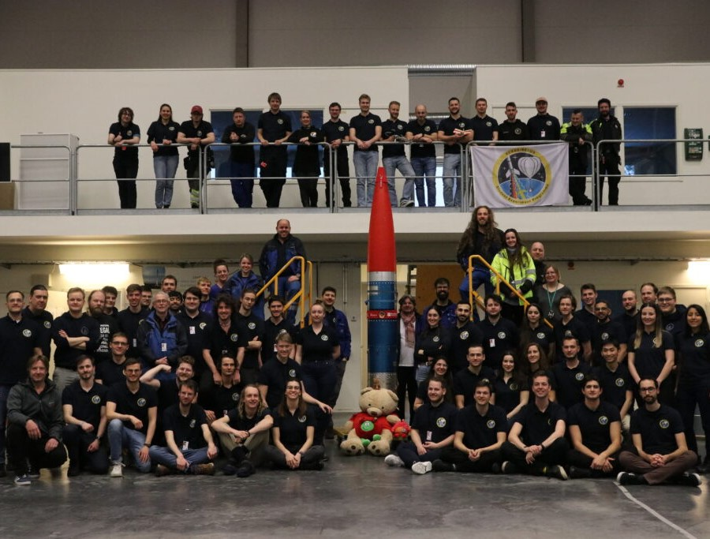
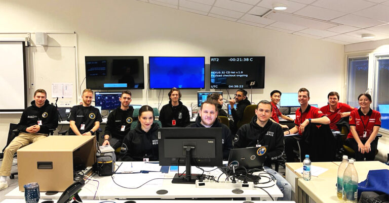
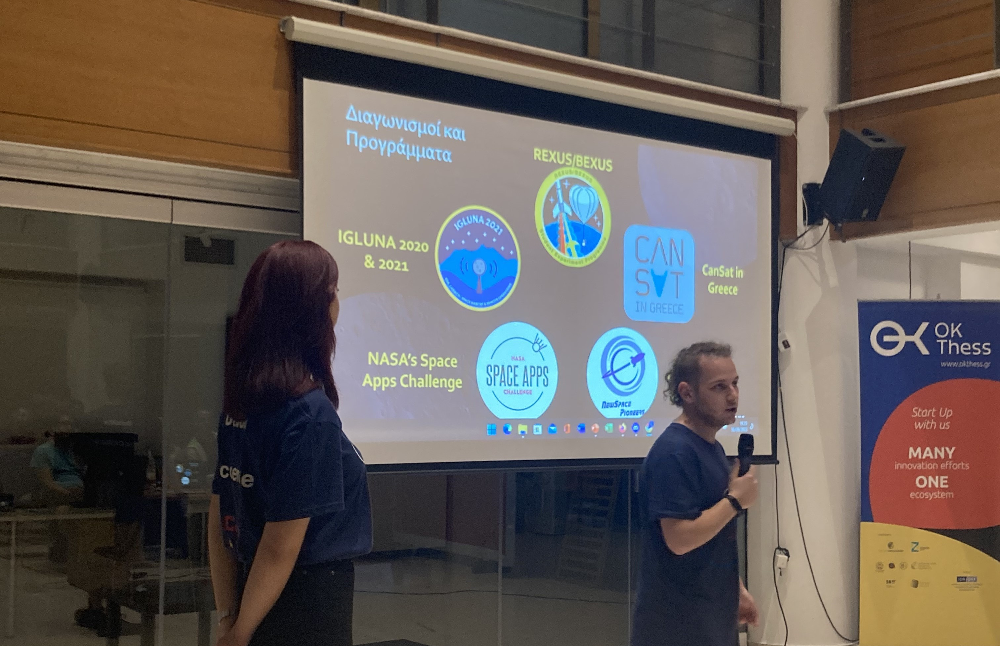

Επαγγελματική Εμπειρία
Full Stack Java Web Developer at Ευρωπαϊκή Δυναμική
04/10/2022 - Παρόν | Βερολίνο, Γερμανία (Εξ αποστάσεως)
- Ανέπτυξα, συντήρησα και βελτίωσα μια εφαρμογή ιστού γραμμένη σε JavaEE και Spring, η οποία χρησιμοποιείται από την Ευρωπαϊκή Επιτροπή και της οποίας το Tech stack περιλαμβάνει μεταξυ άλλων Hibernate, JMS Queues, JSF, Kafka, SOAP & REST Services, και Oracle DBMS.
- Ανέπτυξα ένα εργαλείο για την αυτόματη δημιουργία report documents για διαφορές μεταξύ δύο βάσεων δεδομένων Oracle, χρησιμοποιώντας Python και Node.js.
- Ανέπτυξα εργαλεία και scripts για data migration, port forwarding και αυτοματοποιημένο deployment σε τοπικούς WebLogic servers, χρησιμοποιώντας Python, Docker και shell scripting (PowerShell και bash).
- Έγραψα τεχνικό και business documentation για την εφαρμογή ιστού και τα εργαλεία, καθώς και εγχειρίδια χρήσης για τους τελικούς χρήστες.
- Συντήρησα και ενημέρωσα πολλά εργαλεία για τον αυτόματο εμπλουτισμό business documentation σχετικά με ανταλλαγές μηνυμάτων, με παραδείγματα μηνυμάτων και τεχνική τεκμηρίωση, χρησιμοποιώντας Vanilla JavaScript, Svelte.js και Hugo.
Έργα
Ερευντητική Ομάδα BEAM
Μια ερευνητική ομάδα υποστηριζόμενη από το Αριστοτέλειο Πανεπιστήμιο Θεσσαλονίκης, εστιάζοντας στην ανάπτυξη και εφεύρεση διαστημικής τεχνολογίας.
- Ανέπτυξα εργαλείο οπτικοποίησης δεδομένων σε πραγματικό χρόνο για τον επίγειο σταθμό του πειράματος ECOWISE, χρησιμοποιώντας IPython και Pandas.
- Ηγήθηκα της υποομάδας λογισμικού για τη δημιουργία εφαρμογής ιστού που οπτικοποιεί σε πραγματικό χρόνο τα δεδομένα του πειράματος DROPSTAR, χρησιμοποιώντας Python, Flask και asyncio, καθώς και την ανάπτυξη του ενσωματωμένου λογισμικού και της σειριακής επικοινωνίας του πειράματος με Python, asyncio, pyserial και διάφορες ιδιόκτητες βιβλιοθήκες.
- Ηγήθηκα πολλών εργαστηρίων και διαλέξεων σχετικά με προγραμματισμό Python και διαστημική τεχνολογία.
- Συμμετέχω ενεργά στις ομάδες Frontend, Backend και DevOps του Project Astro για την ανάπτυξη συστήματος ραδιοτηλεσκοπίου με Python, FastAPI, Angular, PostgreSQL, Supabase και Docker.



mvn-tree-visualizer
Ένα απλό εργαλείο γραμμής εντολών για την οπτικοποίηση του δέντρου εξαρτήσεων ενός Maven project σε γραφική και διαδραστική μορφή.
- Συντηρώ και δημοσιεύω ενεργά ένα εργαλείο γραμμής εντολών σε Python που απεικονίζει γραφικά το δέντρο εξαρτήσεων ενός Maven project, χρησιμοποιώντας Python και mermaid.js.
- Έχει πλέον πάνω από 18.000 λήψεις στο PyPI και χρησιμοποιείται από πολλούς προγραμματιστές στην κοινότητα της Java.
WebText2SQL
Μια διαδικτυακή εφαρμογή-πελάτης βάσεων δεδομένων, που επιτρέπει στους χρήστες να διατυπώνουν ερωτήματα SQL σε βάση δεδομένων της επιλογής τους χρησιμοποιώντας φυσική γλώσσα.
- Επιτρέπει στους χρήστες να διαχειρίζονται συνδέσεις βάσεων δεδομένων και χρησιμοποιεί το GPT-4o-mini για τη μετατροπή ερωτημάτων φυσικής γλώσσας σε SQL. Διαθέτει δικό της σύστημα αυθεντικοποίησης και εξουσιοδότησης χρηστών.
- Το tech stack του έργου περιλαμβάνει, μεταξύ άλλων, Python, FastAPI, Chainlit, PostgreSQL, MySQL, SQLAlchemy, Pydantic και Docker.
Exoplings
Μια επιστημονική web εφαρμογή που επιτρέπει στους χρήστες να ανεβάζουν τα δεδομένα καμπύλης φωτός τους και να αναζητούν εξωπλανήτες χρησιμοποιώντας μοντέλα AI για να συμπεράνουν την παρουσία εξωπλανητών στα δεδομένα.
- Υποβλήθηκε στο hackathon NASA SpaceApps Challenge 2025 στη Θεσσαλονίκη, κέρδισε την πρώτη θέση στην τοπική διοργάνωση και προκρίθηκε ως παγκόσμια υποψηφιότητα της χρονιάς.
- Το tech stack περιλαμβάνει, μεταξύ άλλων, Python, Flask, Swyft, Pandas, batman-package, lightkurve, plotly και scipy.
Συνεισφέρων σε έργα ανοιχτού κώδικα
Συνεισφέρω ενεργά σε διάφορα έργα ανοιχτού κώδικα, βελτιώνοντας τη λειτουργικότητα και το documentation τους.
- Συνεισφορές: @ng-matero, @PyMySQL, @Chainlit, soccerdata, ScraperFC
Εθελοντική Εμπειρία
Δάσκαλος Προγραμματισμού at Ομπρέλα
01/01/2020 - 01/06/2020 | Θεσσαλονίκη, Ελλάδα
Μια πανεπιστημιακή εθελοντική ομάδα που προσέφερε δωρεάν μαθήματα προγραμματισμού σε φοιτητές που χρειάζονταν επιπλέον υποστήριξη.
- Δίδαξα προγραμματισμό Python σε φοιτητές πρώτου έτους.
- Δίδαξα προγραμματισμό Java σε φοιτητές μηχανικών ηλεκτρονικής.
Μέλος Ομάδας Academic Experts at NASA Space Apps Challenge 2022
10/05/2022 - 03/10/2022 | Θεσσαλονίκη, Ελλάδα
Ένας παγκόσμιος διαγωνισμός hackathon από τη NASA, με επίκεντρο την τεχνολογία και την καινοτομία στο διάστημα.
- Μέλος του Academics team, το οποίο ήταν υπεύθυνο για την πρόσκληση μεντόρων και κριτών από τον ακαδημαϊκό χώρο για την υποστήριξη των συμμετεχόντων.
- Παρουσίαση της BEAM και της Διαστημικής Τεχνολογίας στην εκδήλωση.
- Καθοδήγηση πολλών ομάδων σε προγραμματισμό Python, ανάπτυξη ιστού και οργάνωση των έργων τους.
Συστάσεις
Χρήστος Ρίζος
Πρώην Team Leader στην European Dynamics
Iraklis Konsoulas consistently demonstrated exceptional professionalism, technical excellence, and a proactive mindset. His deep expertise in Java and related frameworks, combined with his problem-solving abilities and collaborative spirit, made him an invaluable member of our team. I wholeheartedly recommend him for any role demanding top-tier engineering talent.